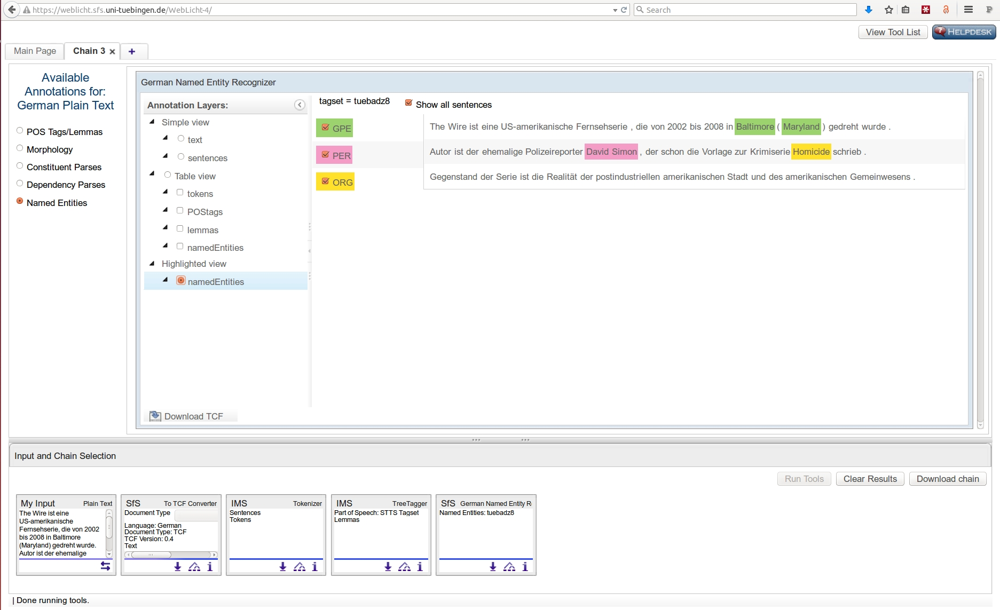

<!doctype html>
<html lang="en">
<head>
<meta charset="utf-8">
<!-- CUSTOMIZE THIS! -->
<title>Einführung in die Digital Humanities</title>
<meta name="author" content="Christof Schöch">
<!-- END -->
<meta name="description" content="Slides">
<meta name="apple-mobile-web-app-capable" content="yes">
<meta name="apple-mobile-web-app-status-bar-style" content="black-translucent">
<meta name="viewport" content="width=device-width, initial-scale=1.0, maximum-scale=1.0, user-scalable=no, minimal-ui">
<link rel="stylesheet" href="css/reveal.css">
<link rel="stylesheet" href="css/theme/simple.css" id="theme">
<!-- Code syntax highlighting -->
<link rel="stylesheet" href="lib/css/zenburn.css">
<!-- Printing and PDF exports -->
<script>
var link = document.createElement( 'link' );
link.rel = 'stylesheet';
link.type = 'text/css';
link.href = window.location.search.match( /print-pdf/gi ) ? 'css/print/pdf.css' : 'css/print/paper.css';
document.getElementsByTagName( 'head' )[0].appendChild( link );
</script>
<!--[if lt IE 9]>
<script src="lib/js/html5shiv.js"></script>
<![endif]-->
</head>


<body>
<div class="reveal">
<div class="slides">
<section data-markdown="" data-separator="^\n---\n" data-separator-vertical="^\n--\n" data-charset="utf-8" data-background-image="img/basics/uni-trier-mini.png" data-background-size="50px" data-background-position="top right">
<script type="text/template">

## Computerlinguistik /<br/>Natural Language Processing
<hr/>
<br/>
<br/>Vorlesung *Einführung in die Digital Humanities*
<br/>MSc Digital Humanities | Wintersemester 2018/19
<br/>
<br/>Prof. Dr. Christof Schöch
<br/>
<br/>
<hr/>
<br/>


--
## Ankündigungen
<br/>
* Vortrag: Christian Reul (Würzburg): "OCR4all ‐ Ein vollständiger OCR Workflow gekapselt in einem Open Source Tool" (Do, 16-18, DM 131)

---
## Semesterüberblick

<small>

* 23.10.: Digital Humanities im Überblick
* 30.10.: Digitalisierung: Text und Bild
* 06.11.: Grundbegriffe des Programmierens
* 13.11.: Datenmodellierung 1: Modellierung
* 20.11.: Datenmodellierung 2: Datenbanken
* 27.11.: Datenmodellierung 3: Text, Markup, XML
* 04.12.: Digitale Edition
* 11.12.: Geschichte der Digital Humanities
* 18.12.: Informationsvisualisierung
* 22.12.-2.1.: *Weihnachtspause*
* **08.01.: Computerlinguistik / Natural Language Processing**
* 15.01.: Quantitative Analyse 1: Stilometrie, Topic Modeling
* 18.01.: Quantitative Analyse 2: Superv. Machine Learning
* 29.01.: Open Humanities
* 05.02.: Klausurtermin

--
## Sitzungsüberblick
<br/>
1. Einstieg: L, CL, NLP
2. Aufbau von Text-/Sprachkorpora
3. Einzelne Annotationstechniken
4. Regeln und Wahrscheinlichkeiten
5. Beispiel: WebLicht


---
# 1. Einstieg: L, CL, NLP

--
## NLP und CL im Alltag
</img>


--
## Unterscheidungen
<br/>
* Linguistik
* Computerlinguistik
* Natural Language Processing

--
</img>


--
## Linguistik
<br/>
* Linguistik ist die wissenschaftliche, theoriegeleitete, synchrone und diachrone Beschreibung von Sprache <!-- .element: class="fragment" data-fragment-index="1" -->
* Sprache als System mit unterschiedlichen Ebenen:  <!-- .element: class="fragment" data-fragment-index="2" -->
    * Phonetik / Phonologie
    * Morphologie
    * Syntax
    * Semantik
    * Pragmatik

--
## Computerlinguistik
<br/>
* Teilgebiet der Linguistik an der Schnittstelle von Informatik und Linguistik <!-- .element: class="fragment" data-fragment-index="1" -->
* Ziel: Beschreibung des Sprachsystems mit computergestützten Methoden <!-- .element: class="fragment" data-fragment-index="2" -->
* Typische Arbeitsbereiche: <!-- .element: class="fragment" data-fragment-index="3" -->
    * Empirische Überprüfung linguistischer Theorien
    * Automatische Annotation von Sprache auf verschiedenen Ebenen
    * Statistische Auswertung der Annotationen

--
## Natural Language Processing
<br/>
* Teilgebiet der Informatik an der Schnittstelle von Informatik und Linguistik <!-- .element: class="fragment" data-fragment-index="1" -->
* Enge Verbindungen zur Künstlichen Intelligenz und Kognitiven Psychologie <!-- .element: class="fragment" data-fragment-index="2" -->
* Ziel: Anwendungsbezogener Einsatz von Techniken aus Informatik und Computerlinguistik <!-- .element: class="fragment" data-fragment-index="3" -->
* Typische Arbeitsbereiche <!-- .element: class="fragment" data-fragment-index="4" -->
    * Sprachverstehen (bspw. Diktiersoftware)
    * Sprachproduktion (bspw. Navigationssoftware) 
    * Machine Translation (bspw. Google Translate, TM) 
    * Sentiment Analyse (bspw. Marktforschung)

--
## Einige Aufgaben von CL und NLP
<br/>
* Aufbau und Verwaltung von Korpora sprachlicher Daten <!-- .element: class="fragment" data-fragment-index="1" -->
* Entwicklung von Methoden zur Modellierung / Operationalisierung sprachlicher Phänomene <!-- .element: class="fragment" data-fragment-index="2" -->
* Bereitstellung von Wissen über Aspekte individueller Sprachen <!-- .element: class="fragment" data-fragment-index="3" -->
* Entwicklung von Algorithmen und Methoden zur Bearbeitung von sprachlichen Äußerungen <!-- .element: class="fragment" data-fragment-index="4" -->
* Entwicklung nützlicher, sprachbasierter Anwendungen <!-- .element: class="fragment" data-fragment-index="5" -->
* Konzeption effektiver Evaluationsmechanismen <!-- .element: class="fragment" data-fragment-index="6" -->


--
### State of the Art (Jurafsky)
</img>
<br/>
<small>(Quelle: Dan Jurafsky, "Introduction to NLP", https://slideplayer.com/slide/4578600/)</small>


---
# 2. Aufbau von Text-/Sprachkorpora
<br/>

--
## Begrifflichkeiten
<br/>
* Korpus, engl. corpus
* Textedition, engl. (scholarly) text edition
* Textsammlung, engl. text collection

--
## Korpus
<br/>
* Begriff aus dem linguistischen Kontext <!-- .element: class="fragment" data-fragment-index="1" -->
* kann mehr oder weniger umfangreich sein <!-- .element: class="fragment" data-fragment-index="2" -->
* kann Daten in Text- oder Audioform beinhalten <!-- .element: class="fragment" data-fragment-index="3" -->
* häufig: für eine bestimmte Domäne repräsentativ <!-- .element: class="fragment" data-fragment-index="4" -->
* häufig: stratifiziert nach Unterdomänen; ausgeglichene Anteile; Textsamples <!-- .element: class="fragment" data-fragment-index="5" -->
* häufig: mit linguistischen Annotationen versehen<br/>Lemma, Wortart <!-- .element: class="fragment" data-fragment-index="6" -->
* in diversen Formaten: CSV, XML, XMI (standoff), TCF <!-- .element: class="fragment" data-fragment-index="7" -->

--
## Beispiele für Korpora
<br/>
* **British National Corpus** (BNC, 100 Millionen Tokens, http://www.natcorp.ox.ac.uk/)
* **Deutsches Referenzkorpus** (DeReKo, >42 Milliarden Tokens, http://www1.ids-mannheim.de/kl/projekte/korpora/)
* **Deutsches Textarchiv** (DTA, 3800 Texte, http://www.deutschestextarchiv.de/)
* **LAUDATIO-Korpora** (historische Korpora, http://www.laudatio-repository.org/repository/)

--
## Wiss. Textedition
<br/>
* Begriff aus den Editionswissenschaften <!-- .element: class="fragment" data-fragment-index="1" -->
* häufig: weniger umfangreich als Korpora <!-- .element: class="fragment" data-fragment-index="2" -->
* häufig: autorzentrierte Gegenstandsdefinition <!-- .element: class="fragment" data-fragment-index="3" -->
* meist sehr hohe Ansprüche an Textqualität und Transparenz der Texterstelllung <!-- .element: class="fragment" data-fragment-index="4" -->
* Fokus auf der (editorischen) Erschließung <!-- .element: class="fragment" data-fragment-index="5" -->
* in der Regel in XML-TEI (mit Derivaten) <!-- .element: class="fragment" data-fragment-index="6" -->  
* Beispiele: siehe Sitzung 7 <!-- .element: class="fragment" data-fragment-index="7" -->

--
## Textsammlung
<br/>
* Weniger etablierter Begriff aus den DH <!-- .element: class="fragment" data-fragment-index="1" -->
* häufig: wesentlich umfangreicher als Editionen <!-- .element: class="fragment" data-fragment-index="2" -->
* häufig: weiter Definition des Gegenstandsbereichs<br/>nach Sprache, Gattung, Epoche <!-- .element: class="fragment" data-fragment-index="3" -->
* Formate: häufig TXT, HTML oder XML-TEI <!-- .element: class="fragment" data-fragment-index="4" -->
* meistens ohne linguistische Annotation <!-- .element: class="fragment" data-fragment-index="5" -->
* geringere Anforderungen an Textqualität und Transparenz <!-- .element: class="fragment" data-fragment-index="6" -->

--
## Beispiele: 
* **TextGrid's Digitale Bibliothek**, 600 Autorenwerke, https://textgridrep.org/
* **Théâtre classique**, 1100 Theaterstücke, http://theatre-classique.fr/
* **Litteraturbanken**, 2000 Texte, http://litteraturbanken.se
* **Papyri.info**, 50.000 Dokumente, http://papyri.info

--
## RIDE 
<br/>
* "A review journal for digital editions and resources"
* Reviews von Texteditionen und Textsammlungen
* Ulrike Henny und Frederike Neuber: "Criteria for Reviewing Digital Text Collections, version 1.0", 2017
* http://ride.i-d-e.de/

--
## Aspekte des Aufbaus<br/>von Textsammlungen / Korpora
<br/>
* Repräsentativität (Verhältnis zur Grundgesamtheit) <!-- .element: class="fragment" data-fragment-index="1" -->
* Größe (in Texten, in Tokens, in Zeichen) <!-- .element: class="fragment" data-fragment-index="2" -->
* Annotationen (linguistisch, strukturell, Metadaten) <!-- .element: class="fragment" data-fragment-index="3" -->
* Textselektion (Zeit, Sprache, Register, Gattungen, Autoren, etc.) <!-- .element: class="fragment" data-fragment-index="4" -->
* Textform (vollständig oder Samples) <!-- .element: class="fragment" data-fragment-index="5" -->

--
## Fokus: Repräsentativität
<br/>
* Repräsentativität = auf der Grundlage der Textsammlung können verallgemeinerte Aussagen über die tatsächlichen Verhältnisse gemacht werden
* sehr hohe Anforderungen
    * Grundgesamtheit muss bekannt sein
    * es muss ein zufälliges Sample aus der Grundgesamtheit erstellt worden sein
    * reiner Umfang ist weniger entscheidend

--
## Alternativen
<br/>
* Balancierte Sammlung (verschiedene relevante Textgruppen sind in vergleichbarem Umfang vorhanden)
* Opportunistische Sammlung (rein nach praktischer Verfügbarkeit)


---
# 3. Einzelne Annotationstechniken

--
## Annotationstechniken
<br/>
* Tokenisierung
* Lemmatisierung
* POS-Tagging
* Morphologisches Tagging
* Syntaktisches Parsing
* Named Entity Recognition
* Sentiment Analysis

--
## Tokenisierung
<br/>
* Definition: Ermittlung der Grenzen zwischen Wörtern
<br/><br/>
* Beispiel:  <!-- .element: class="fragment" data-fragment-index="1" -->
    * Satz: "Möge die Macht mit dir sein."
    * Tokenisiert: "Möge, die, Macht, mit, dir, sein, ."

--
## Herausforderungen
<br/>
* Bindestriche <!-- .element: class="fragment" data-fragment-index="1" -->
    * Mehrweg-Pfandflasche
    * "live off-campus"
* Mehrteilige Wörter <!-- .element: class="fragment" data-fragment-index="2" -->
    * Süddeutsche Zeitung
    * New York City
* Apostrophen <!-- .element: class="fragment" data-fragment-index="3" -->
    * "don't"
    * "Ella, elle l'a"

--
## Lemmatisierung
<br/>
* Definition: Zurückführung auf die linguistische Grundform 
<br/><br/>
* Beispiel:  <!-- .element: class="fragment" data-fragment-index="1" -->
    * Satz: “Wir wären gerne länger geblieben.”
    * Lemmatisiert: “wir, sein, gerne, lang, bleiben, .”

--
## Herausforderungen
<br/>
* Fehler bei der Tokenisierung <!-- .element: class="fragment" data-fragment-index="1" -->
    * "There, are, no, off, campus, bar, in, New, York, City"
    * "off-campus", "New York City"
<br/><br/>
* Zweideutige Tokens <!-- .element: class="fragment" data-fragment-index="2" -->
    * “Die Buche steht im Wald”, Lemma = "Buche"
    * “Buche bitte den Urlaub in Wallonien”, Lemma = buchen


--
## Part-of-Speech Tagging
<br/>
* Definition: Zuordnung, zu jedem Token, einer grammatischen Kategorien
* Grundlage: eine Ontologie linguistischer Klassen (=Tagset)
<br/><br/>
* Beispiel:  <!-- .element: class="fragment" data-fragment-index="1" -->
    * Satz: “Die Tage sind kurz.” 
    * Getaggt: “Die_ART Tage_SUBST sind_VERB kurz_ADJ ._PUNC”

--
## Herausforderung
<br/>
* Fehler bei der Tokenisierung <!-- .element: class="fragment" data-fragment-index="1" -->
    * "There are no off-campus bars in New York City"
    * off_PRP, campus_N vs. off-campus_ADJ vs. 
    * New_ADJ, York_NP, City_NC vs. New York City_NP
<br/><br/>
* Ambiguitäten <!-- .element: class="fragment" data-fragment-index="2" -->
    * “Klaus hat lange Nudeln gegessen”
    * a) lange_ADJ (“lange Nudeln”) 
    * b) lange_ADV (“lange ... gegessen”)


--
## Syntaktisches Parsing
<br/>
* Definition: Ermittlung der hierarchischen, grammatikalischen Struktur eines Satzes. 
<br/><br/>
* Beispiel: "Nach der zu langen Party sind wir schnell zum See gefahren."<br/><br/> <!-- .element: class="fragment" data-fragment-index="1" -->
</img> <!-- .element: class="fragment" data-fragment-index="1" -->

--
## Herausforderungen
<br/>
* Syntaktische Ambiguität (siehe POS) <!-- .element: class="fragment" data-fragment-index="1" -->
    * “Klaus hat lange Nudeln gegessen”
    * a) NP(ADJ+N) (“lange Nudeln”) 
    * b) VP(ADV+V) (“lange ... gegessen”)


--
## Named Entity Recognition
<br/>
* Definition: Identifikation und Klassifikation von Tokens, die sich auf Personen, Orte, Daten, Organisationen beziehen
<br/><br/>
* Beispiel: Zeitungstexte <!-- .element: class="fragment" data-fragment-index="1" -->
    * Satz: “Elon Musk sagte in Paris, er wolle in der Stadt des Lichts einen großen Tesla Showroom eröffnen.”  <!-- .element: class="fragment" data-fragment-index="1" -->
    * Mit NER: “[Elon Musk]_PERS sagte in [Paris]_PLACE, er wolle in der Stadt des Lichts einen großen [Tesla]_ORG Showroom eröffnen. <!-- .element: class="fragment" data-fragment-index="2" -->

--
## NER mit "Coreference Resolution"
<br/>
* Definition: Identifikation der Referenten von anaphorischen Ausdrücken
<br/><br/>
* Beispiel: Zeitungstexte <!-- .element: class="fragment" data-fragment-index="1" -->
    * Satz: “Elon Musk sagte in Paris, er wolle in der Stadt des Lichts einen großen Tesla Showroom eröffnen.”  <!-- .element: class="fragment" data-fragment-index="1" -->
    * NER mit CR: “[Elon Musk]_1 sagte in [Paris]_2, [er]_1 wolle in der [Stadt des Lichts]_2 einen großen [Tesla]_3 Showroom eröffnen. <!-- .element: class="fragment" data-fragment-index="2" -->


--
## Sentiment Analysis
<br/>
* Definition: Einen Satz (oder eine Phrase) nach ihrer Wertung (positiv, negativ, neutral) klassifizieren
<br/><br/>
* Beispiel Produktbewertungen  <!-- .element: class="fragment" data-fragment-index="1" -->
    * “Die Kamera macht richtig tolle Bilder”, 0.8
    * “Der Zoombereich ist nicht nützlich”, -0.4
    * “Der Autofokus funktioniert meistens nicht”, -0.1

--
## Herausforderungen
<br/>
* Negation:  <!-- .element: class="fragment" data-fragment-index="1" -->
    * “Ich finde, dass die Kamera tolle Bilder macht! 
    * vs. „Ich finde nicht, dass die Kamera tolle Bilder macht!” 
    * vs. “Ich sage ja nicht, dass die Kamera nicht tolle Bilder macht!”
    <br/><br/>
* Ironie, Sarkasmus, Implizites <!-- .element: class="fragment" data-fragment-index="2" -->
    * "Die Kamera ist sicher für Katzenbilder gut geeignet."


---
# 4. Verschiedene Annotationsstrategien


--
## Beispiel: POS-Tagging
<br/>
* "Der Baum ist grün"
* Der_DET Baum_NC ist_V grün_ADJ
<br/><br/>&nbsp;
* "Klaus isst lange Nudeln"
* Klaus_NP isst_V lange_ADJ|ADV Nudeln_NC

--
## Verschiedene Annotationsstrategien
<br/>
* Prinzipien <!-- .element: class="fragment" data-fragment-index="1" -->
    * wörterbuchbasiert
    * regelbasiert 
    * Machine Learning
<br/><br/>
* Eigenschaften <!-- .element: class="fragment" data-fragment-index="2" -->
    * Kontextfrei oder sequenzinformation
    * deterministisch vs. probabilistisch

--
## wörterbuchbasiert: Prinzip
<br/>
* Wörterliste mit der Zuordnung von POS ("Vollformenlexikon")
* Algorithmus "schlägt nach"
* Einfach, kontextfrei, deterministisch

--
## wörterbuchbasiert: Grundlage
<br/>
* Der = DET
* Baum = NP
* ist = V
* grün = ADJ
* isst = V
* lange = ADJ
* Nudeln = NP
* Klaus = ?

--
## wörterbuchbasiert: Ergebnis
<br/>
* Der_DET Baum_NC ist_V grün_ADJ &nbsp;&nbsp;&nbsp;✓
* Klaus_? isst_V lange_ADJ Nudeln_NC &nbsp;&nbsp;&nbsp;✗

--
## wörterbuchbasiert: Varianten
<br/>
* a) nur mit einem (dem „normalen“) POS: lange_ADJ
* b) mit allen möglichen POS: lange_ADJ|ADV
* c) mit allen möglichen POS und Auftretenswahrscheinlichkeit: lange_ADJ-80%|ADV-20%

--
## regelbasiert: Prinzip
<br/>
* Es werden deterministische Regeln definiert
* der Algorithmus prüft und wendet die Regeln an
* (fast) ohne Wörterbuch können so Zuordnungen vorgenommen werden
* Regeln können kontextfrei sein oder Sequenzinformation nutzen; 
* Regeln können mit Wahrscheinlichkeiten ausgestattet sein

--
## regelbasiert: Grundlage
<br/>
* Wenn das Wort "(D|d)(er|ie|as)" lautet, ist es ein DET
* Wenn das Wort mit Großbuchstaben anfängt, oder wenn vor dem Wort ein DET steht, ist es ein N
* Wenn vor dem Wort ein N steht, ist es ein V
* Wenn vor dem Wort ein V steht, ist es ein ADJ

--
## regelbasiert: Ergebnis
<br/>
1. Der Baum ist grün
2. Der_DET Baum ist grün
3. Der_DET Baum_N ist_V grün
4. Der_DET Baum_N ist_V grün_ADJ 

--
## regelbasiert: Varianten
<br/>
* Alternativen, bspw.: "wenn auf das Wort ein N folgt, ist es ein DET oder ein ADJ" (der Baum, grüner Baum) <!-- .element: class="fragment" data-fragment-index="1" -->
* Alternativen mit Wahrscheinlichkeiten: "wenn auf das Wort ein N folgt, ist es mit 80% W. ein DET, mit 20% ein ADJ" <!-- .element: class="fragment" data-fragment-index="2" -->
* Regeln mit Wahrscheinlichkeiten: "wenn das Wort mit Großbuchstaben anfängt, ist es mit 60% Wahrscheinlichkeit ein N"; wenn zudem ein DET davor steht, ist es sogar mit 80% Wahrscheinlichkeit ein N" <!-- .element: class="fragment" data-fragment-index="3" -->

--
## Machine Learning: Prinzip
<br/>
* Weder Wörterbücher noch deterministische Regeln <!-- .element: class="fragment" data-fragment-index="1" -->
* Lernalgorithmus bekommt viele Beispiele präsentiert <!-- .element: class="fragment" data-fragment-index="2" -->
* Bekommt Informationen über jedes Wort und korrektes Label <!-- .element: class="fragment" data-fragment-index="3" -->
* Kontextfreie und Sequenzinformationen <!-- .element: class="fragment" data-fragment-index="4" -->
* Algorithmus erlernt selbst Regeln, mit Alternativen und Wahrscheinlichkeiten <!-- .element: class="fragment" data-fragment-index="5" -->
* Diese (oft hochkomplexen Regeln) wendet er dann auf neue Texte an <!-- .element: class="fragment" data-fragment-index="6" -->
* probabilistisch; eher intransparent <!-- .element: class="fragment" data-fragment-index="7" -->

--
## Beispiel: Informationen
<br/>
* "Der Baum ist grün." 
<br/>

<small>
* Wortlänge: 4 Buchstaben
* Erster Buchstabe: "b", Majuskel
* Zweiter Buchstabe: "a"
* Dritter Buchstabe: "u"
* Vierter Buchstabe: "m"
* Wort davor: "der"
* Wort danach: "ist"
* Wort davor: 80% DET
* etc.

</small>

---
# 5. Beispiel: WebLicht

--
## WebLicht (CLARIN-D)
<br/>
* Ein Webservice für linguistische Annotationen
* Bereitgestellt von CLARIN-D (Common Language Resources and Technology Infrastructure)
* https://weblicht.sfs.uni-tuebingen.de/weblicht/

--
## Beispieltext
<br/>
>"Der Zauberberg ist ein 1924 erschienener Bildungsroman von Thomas Mann. Der berühmte Roman spielt in Davos."

--
</img>

--
</img>

--
</img>

--
</img>

--
</img>


---
# Abschluss

--
## Fragen?

--
## Lektürehinweise
<small>

**Referenztext**
* Kai-Uwe Carstensen, Susanne Jekat und Ralf Klabunde (Hrsg.). "Computerlinguistik – Was ist das?", in: *Computerlinguistik und Sprachtechnologie. Eine Einführung*. Hrsg. von Ralf Klabunde et al. Heidelberg: Spektrum, 2009. https://www.linguistics.rub.de/CLBuch/
<br/>
<br/>
**Weitere Empfehlungen**
* Christopher Manning und Hinrich Schütze, *Foundations of Statistical Natural Language Processing*, Boston: MIT Press, 1999. (Oder neuere Auflagen)
* Dan Jurafsky und James A. Martin, *Speech and Language Processing*, Englewood Cliffs: Prentice-Hall, 1999. (Oder neuere Auflagen)
<br/>
<br/>
**Darüber hinaus**
* Stefan Müller, *Einführung in die Computerlinguistik*. FU Berlin, Fachbereich Philosophie und Geisteswissenschaften, 2013. https://hpsg.hu-berlin.de/~stefan/PS/cl-slides.pdf (Foliensatz)
* Christof Schöch, "Aufbau von Datensammlungen", in: *Digital Humanities: Eine Einführung*, hrsg. von Fotis Jannidis, Hubertus Kohle und Malte Rehbein. Stuttgart: Metzler, 2017, S. 223-233.

</small>

--
## Nächste Sitzungen
<br/>
* 15.1.2019: "Quantitative Analyse 1: Stilometrie, Topic Modeling"
* 18.2.2019: "Quantitative Analyse 2: Supervised Machine Learningl
* Vorbereitung: "Quantitative Analyse", *Digital Humanities: Eine Einführung* (in StudIP)

---
<br/>
<br/>
<br/>
<br/>
<br/>Christof Schöch, 2019
<br/>http://www.christof-schoech.de
<br/>
<hr/>
Lizenz: [Creative Commons Attribution 4.0](https://creativecommons.org/licenses/by/4.0/)
<br/>


</script>

<!-- DON'T TOUCH UNLESS YOU KNOW WHAT YOU'RE DOING :-) -->
</div>
<script src="lib/js/head.min.js"></script>
<script src="js/reveal.js"></script>
<script>
// Full list of configuration options available at:
// https://github.com/hakimel/reveal.js#configuration
Reveal.initialize({
    controls: true,
    progress: true,
    history: true,
    center: true,
    transition: 'slide', // none/fade/slide/convex/concave/zoom
    // Optional reveal.js plugins
    dependencies: [
        { src: 'lib/js/classList.js', condition: function() { return !document.body.classList; } },
        { src: 'plugin/markdown/marked.js', condition: function() { return !!document.querySelector( '[data-markdown]' ); } },
        { src: 'plugin/markdown/markdown.js', condition: function() { return !!document.querySelector( '[data-markdown]' ); } },
        { src: 'plugin/highlight/highlight.js', async: true, callback: function() { hljs.initHighlightingOnLoad(); } },
        { src: 'plugin/zoom-js/zoom.js', async: true },
        { src: 'plugin/notes/notes.js', async: true }
        ]
    });
Reveal.configure({ slideNumber: true });
</script>
</body>
</html>
